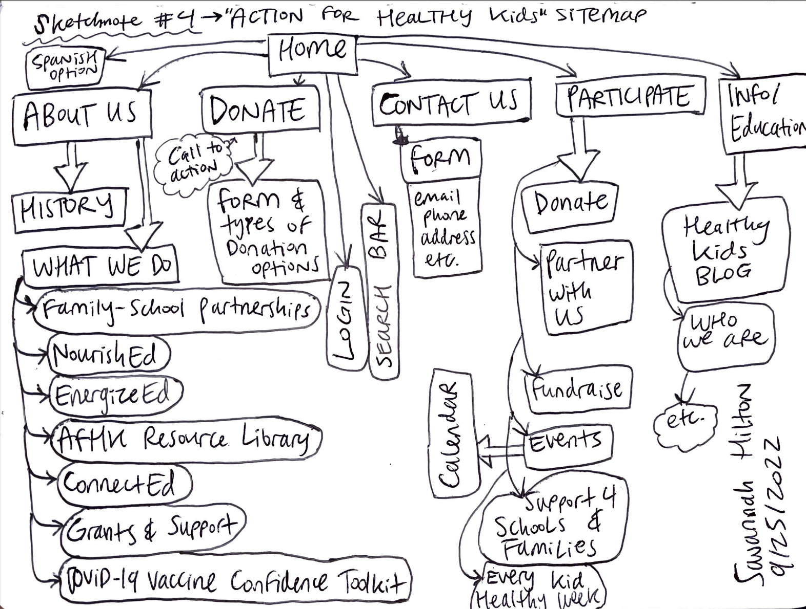
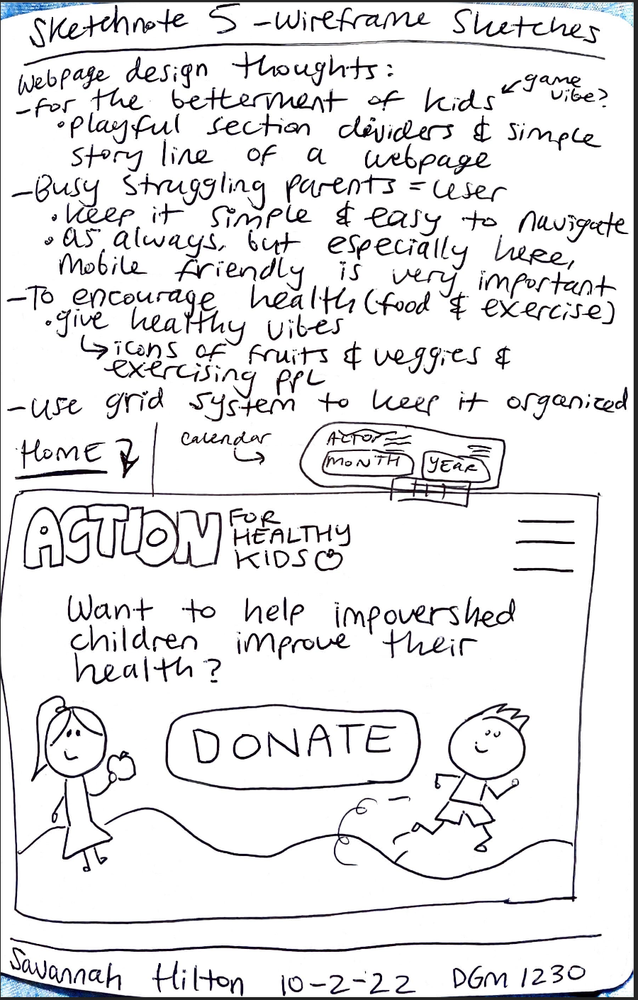
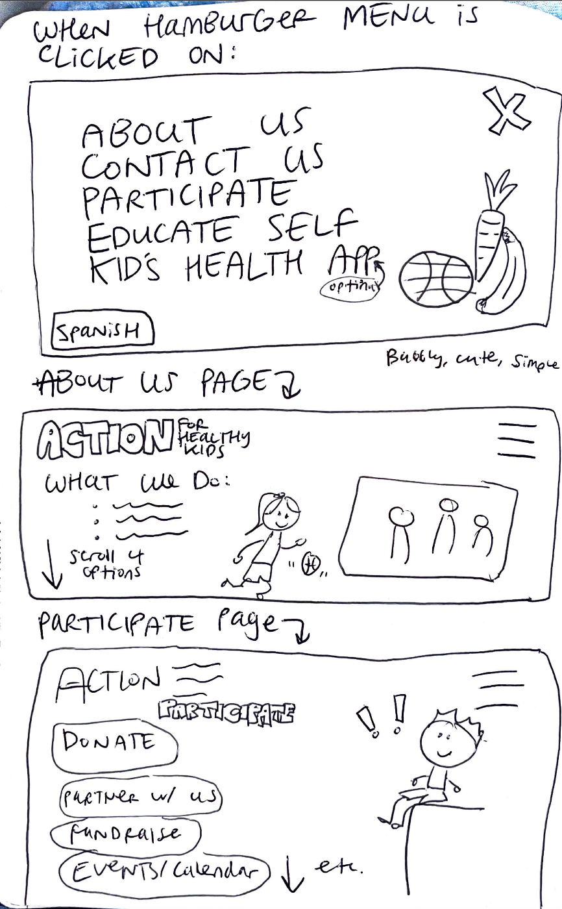
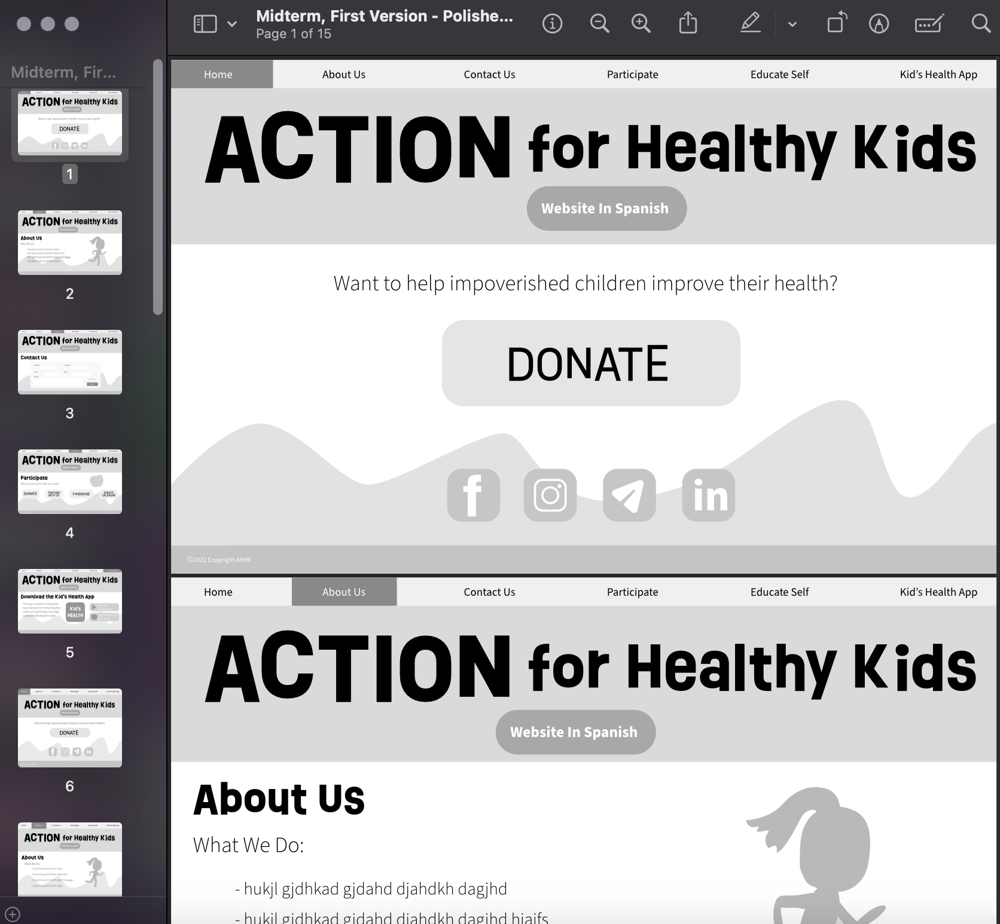

ACTION
for Healthy Kids
Process
For my DGM 1230 class we were instructed to find a non-profit website that needs some work and redesign it. I am personally passionate about the importance of mental and physical health. I know exercise and proper nutrition helps people feel better in life in ever way. Ironically, I am staying up all night to finish this website, but that's besides the point haha.
Because I am passionate about building healthy habits I found a non-profit site that seemed it could do a great deal of good, yet needed a revamp. The site I decided is for an organization called "Action For Healthy Kids" and here is the link to their site.
Some issues I found were that the site was very overwhelming, many links didn't work, the site wasn't as responsive as I would like, and the navigation was very confusing and problematic.
Above take a look at the screenshots of the site at first glance, and the site navigation.
   